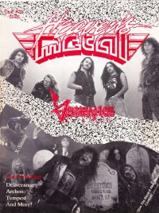

Vengeance Rising
 July 1989 Adonai Metal Rock |
 February 1990 Heaven's Metal |
Media coverage
- 1987 in Heaven's Metal "Metal Mardi Gras", by Doug Van Pelt
- Mar 1988 in Heaven's Metal "Back With A Vengeance", by Crash McNamara
- Apr 1988 in Heaven's Metal "Vengeance: Too Fast To Be True", by Doug Van Pelt
- Apr 1988 in Heaven's Metal "Poster: Vengeance Rising"
- Jul 1988 in Adonai Metal Rock "La Vengeance m'appartient dit le Seigneur"
- Sep 1988 in Notebored "Vengeance Rising"
- 1988 in Zunrise "Los Angeles Metal: Vengeance Rising", by Eric Kristensson
- Win 1988 in Harvest Rock Syndicate "Thrash With A Vengeance", by Kevin Allison
- Feb 1989 in CCM "Mosh For The Master?", by Doug Van Pelt
- 1989 in Cornerstone "Interview: Vengeance Rising", by Chris Ramsey, James Harrar
- Jul 1989 in Adonai Metal Rock "Vengeance,... Quand les Enfants de la Lumiere... Penetrent dans L'Antichambre de L'Enfer"
- Feb 1990 in Heaven's Metal "Once Dead... Now Doing An Interview", by Doug Van Pelt
- Jun 1990 in Heaven's Metal "Concert Review: Vengeance Rising, Paradox, Awake", by Doug Van Pelt
- Jun 1990 in Heaven's Metal "Concert Review: Exodus '90 Festival, San Antonio, TX", by Doug Van Pelt
- Feb 1991 in Heaven's Metal "Out and About With Vengeance Rising", by Doug Van Pelt
- Feb 1991 in Heaven's Metal "Concert Review: Vengeance Rising", by Doug Van Pelt
- Jun 1991 in Heaven's Metal "Vengeance Changing", by Doug Van Pelt
- Feb 1992 in CCM "Getting The Message: Satan", by Steve Rabey
- Mar 1992 in Heaven's Metal "Released Upon This Magazine", by Doug Van Pelt
- May 1992 in Heaven's Metal "Concert Review: Vengeance Rising", by Doug Van Pelt
- Jul 1997 in HM "Pastor Bob's Column: I Remember a Different Roger Martinez", by Pastor Bob
- Nov 2006 in HM "Classic Moments: Houston, TX", by Doug Van Pelt
- 2007 in Sangre Suficiente "El Regreso de los Pioneros del Thrash Celestial", by El Zelote
Albums & reviews:
1987: demo
1988: Human Sacrifice
- Jun 1988 in Heaven's Metal, by Doug Van Pelt
- 1988 in Zunrise
- Nov 1988 in CCM, by Doug Van Pelt
- Win 1988 in Harvest Rock Syndicate, by Ernest P. Strange
- Mar 1989 in Campus Life, by Jim Long
- Jul 1989 in Adonai Metal Rock
- Jul 2005 in HM, by Jamie Lee Rake
1990: Once Dead
- Mar 1990 in Notebored
- Apr 1990 in CCM, by Doug Van Pelt
- Apr 1990 in Heaven's Metal, by Doug Van Pelt
- Spr 1990 in Harvest Rock Syndicate, by Kevin Allison
- Nov 1990 in Campus Life
- May 1991 in Adonai Metal Roxx
1991: Destruction Comes
- May 1991 in Harvest Rock Syndicate, by Kevin Allison
- Jun 1991 in Heaven's Metal, by John Wilson
- Spr 1992 in YouthWorker, by Steve Rabey
2011: Human Sacrifice [reissue]
- Jan 2011 in Down The Line, by Steve Ruff
- Jul 2011 in Heaven's Metal, by Kevin Crothers
2011: Once Dead [reissue]
- Jan 2011 in Down The Line, by Steve Ruff
- Jul 2011 in Heaven's Metal, by Jeff McCormack
Books about Vengeance Rising
- "3199 Vengeance (L.A. CA)" in Headbangers: The Worldwide Mega-Book of Heavy Metal (Mark Hale, 1993).
- "Vengeance Rising (a.k.a. Vengeance)" in The Encyclopedia of Contemporary Christian Music (Mark Allan Powell, 2002).
- Chapter also includes: Roger Martinez.
© 2011 CMnexus. Last updated August 2025. Contact: editor -AT- cmnexus -DØT- org